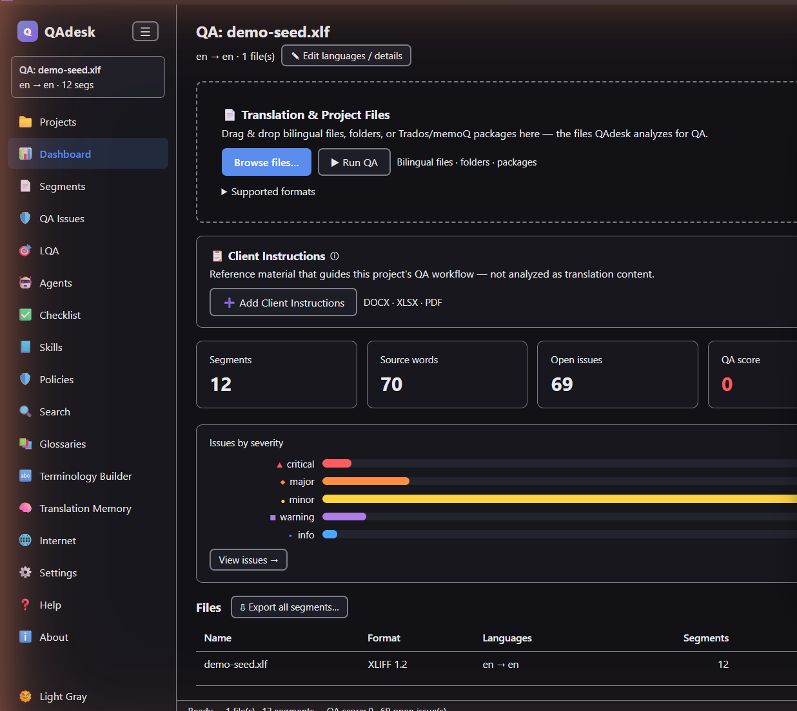

Download QAdesk
QAdesk Early Access — free for Windows. Available free of charge to translators in our Early Access program — no account, no subscription. Free during Early Access; future versions will require a paid license. Early Access users get advance notice before any commercial release.
We'd love your feedback as you use QAdesk — it directly shapes future releases.
Heads-up on first launch: the installer isn't code-signed yet, so Windows SmartScreen may show a
“Windows protected your PC” prompt. Click More info → Run anyway to continue. Signing is on the roadmap.
System requirements
Core app
- Windows 10 or 11, 64-bit
- Dual-core CPU or better
- 4 GB RAM (8 GB comfortable)
- No GPU required
- ~250 MB disk space
Optional local AI
- Ollama (separate install)
- 8 GB RAM (16 GB recommended)
- GPU optional — speeds inference
- 2–8 GB disk per model
- Runs fully on your machine
Installing
- 1
Run the installer
Double-click the downloaded
QAdesk-Setupfile and follow the prompts. - 2
Launch QAdesk
Open it from the Start menu. No account or sign-in — it opens straight to your projects.
- 3
Import & QA
Drop in a bilingual file and press Run QA. See the docs to go deeper.
